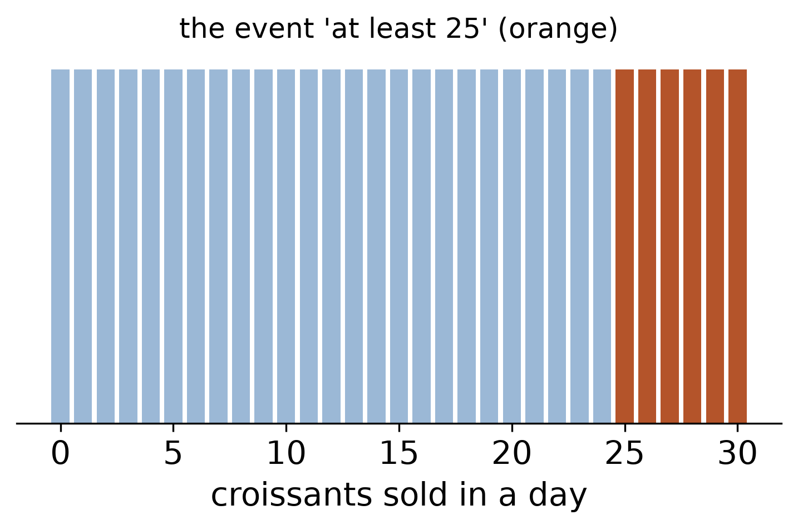
Events, probability and counting
Lecture 1 · Probability Theory and Mathematical Statistics
2026-11-07
Will Ilya sell at least 25 croissants?
\[ \newcommand{\E}{\mathbb{E}} \newcommand{\Var}{\operatorname{Var}} \newcommand{\Cov}{\operatorname{Cov}} \newcommand{\Corr}{\operatorname{Corr}} \newcommand{\Prob}{\mathbb{P}} \newcommand{\R}{\mathbb{R}} \]
Ilya opens a coffee stand near Paveletskaya station and bakes 30 croissants every morning.
Some days he sells 22. Some days all 30 by ten o’clock.
“How many will he sell?” has no certain answer. How likely is at least 25? That he can plan around: dough, a second person for the rush.
Random experiment and sample space Def 1.1
A random experiment is a procedure whose result we cannot predict with certainty, but whose possible results we can list in advance.
Each possible result is an outcome. The set of all outcomes is the sample space \(\Omega\).
The list is something you choose. It depends on what you decide to record.
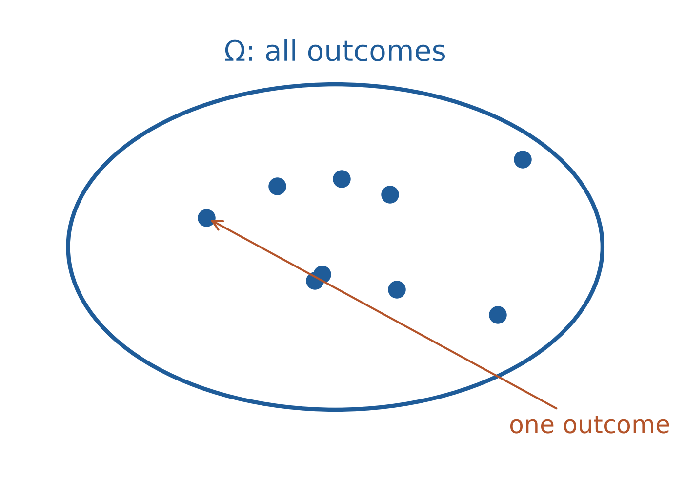
Four experiments, four sample spaces Ex 1.1
| Experiment | Sample space \(\Omega\) |
|---|---|
| One customer buys (\(B\)) or leaves (\(L\)) | \(\{B,\ L\}\) |
| Two customers, in order | \(\{BB,\ BL,\ LB,\ LL\}\) |
| Croissants sold in a day | \(\{0,1,2,\dots,30\}\) |
| Minutes a customer waits in the queue | \([0,\infty)\) |
\(BL\) is not the same outcome as \(LB\): we record both customers, in order.
The last space is not a list at all. It is a whole interval of numbers.
Two customers in order Ex 1.1
Each customer is \(B\) or \(L\). Record the first, then the second.
Two stages, two choices each: four outcomes.
\(\Omega=\{BB,\ BL,\ LB,\ LL\}\)
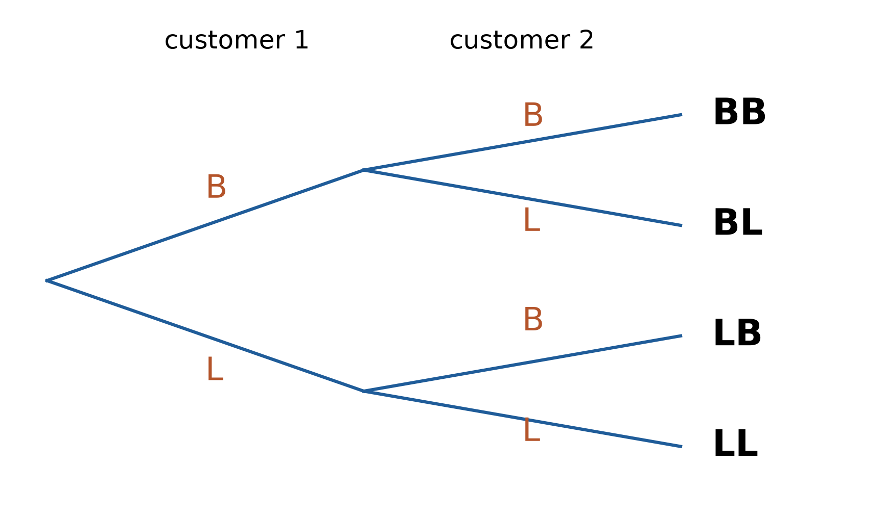
A list or an interval
Croissants sold: \(\{0,1,2,\dots,30\}\). Even without a limit, \(\{0,1,2,\dots\}\) is an infinite list.
Waiting time: \([0,\infty)\). You cannot number the possible waiting times one by one. This is a different kind of infinity.
We keep this difference until Lecture 4.
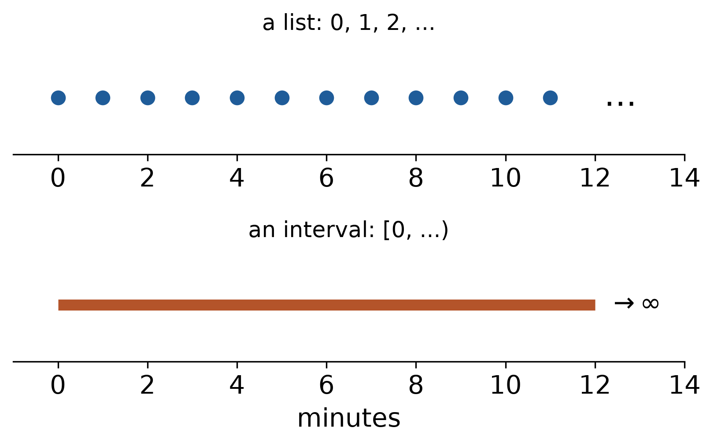
A habit to avoid: too coarse an \(\Omega\) Sec 1.1
Wrong. Record only how many of two customers bought: \(\{0,1,2\}\).
We lose the difference between \(BL\) and \(LB\).
The three remaining outcomes are no longer equally likely.
Right. Keep the finest description: \(\{BB, BL, LB, LL\}\).
“One bought” is the event \(\{BL, LB\}\): two outcomes out of four.
We meet this trap again with dice.
Event Def 1.2
An event is a set of outcomes, a subset \(A\subseteq\Omega\).
\(A\) occurs if the outcome of the experiment belongs to \(A\).
- \(\Omega\): the sure event, something always happens
- \(\varnothing\): the impossible event
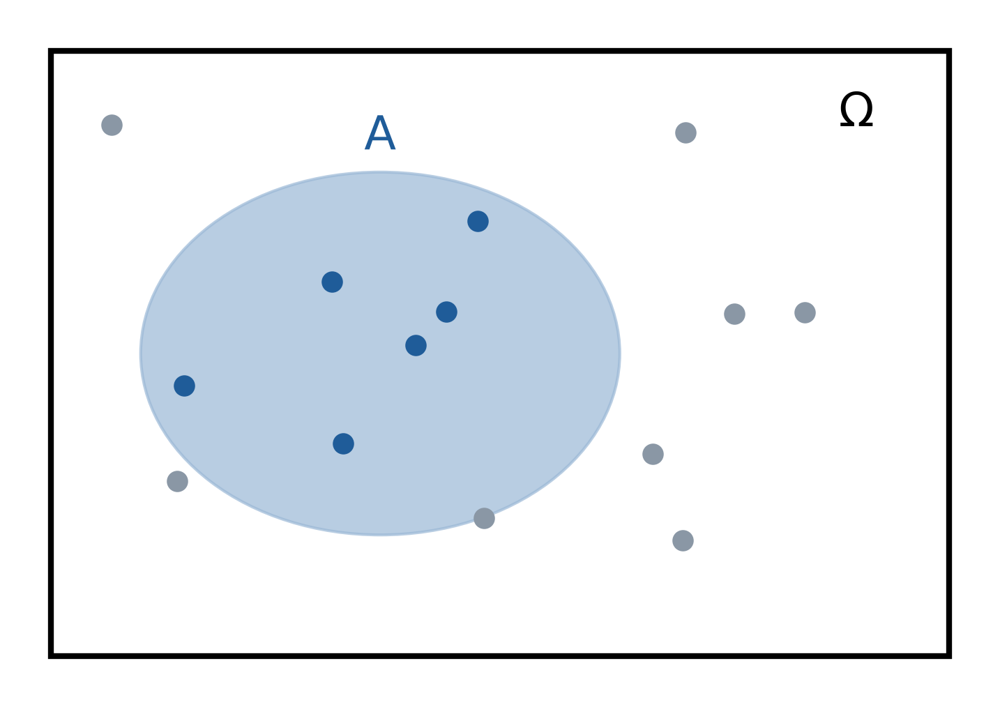
Set operations on events Table 1.1
Events are sets, so we combine them with set operations. You should be able to go both ways without thinking.
| Notation | Reads as | Occurs when |
|---|---|---|
| \(A\cup B\) | \(A\) or \(B\) | at least one of them occurs |
| \(A\cap B\) | \(A\) and \(B\) | both occur |
| \(A^c\) | not \(A\) | \(A\) does not occur |
| \(A\cap B^c\) | \(A\) but not \(B\) | \(A\) occurs and \(B\) does not |
The four operations as regions Fig 1.1
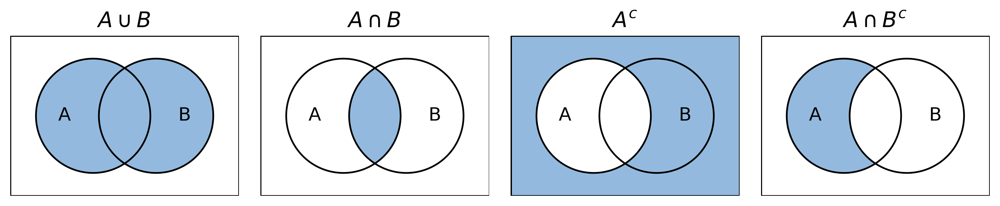
The rectangle is \(\Omega\). The shaded region is the event named above each panel.
Promo code and mobile app Ex 1.2
One customer is picked at random from yesterday’s orders.
\(A\): used a promo code. \(B\): ordered through the app.
\(A\cap B^c\): promo code, placed on the website.
\((A\cup B)^c\): no promo code, not in the app.
\(A^c\cap B^c\) reads the same way. The two events are equal.
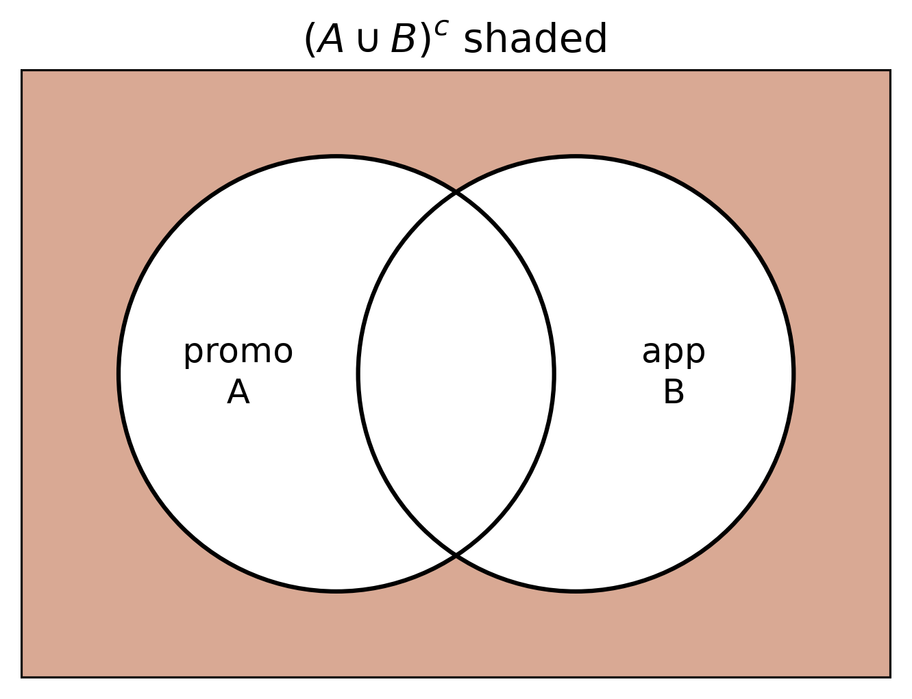
Mutually exclusive events, partition Def 1.3
\(A\) and \(B\) are mutually exclusive (disjoint) if \(A\cap B=\varnothing\): they cannot occur together.
\(H_1,\dots,H_n\) form a partition of \(\Omega\) if they are pairwise mutually exclusive and \(H_1\cup\dots\cup H_n=\Omega\). Exactly one of them occurs.
The simplest partition: \(A\) and \(A^c\). It returns in Lecture 2.
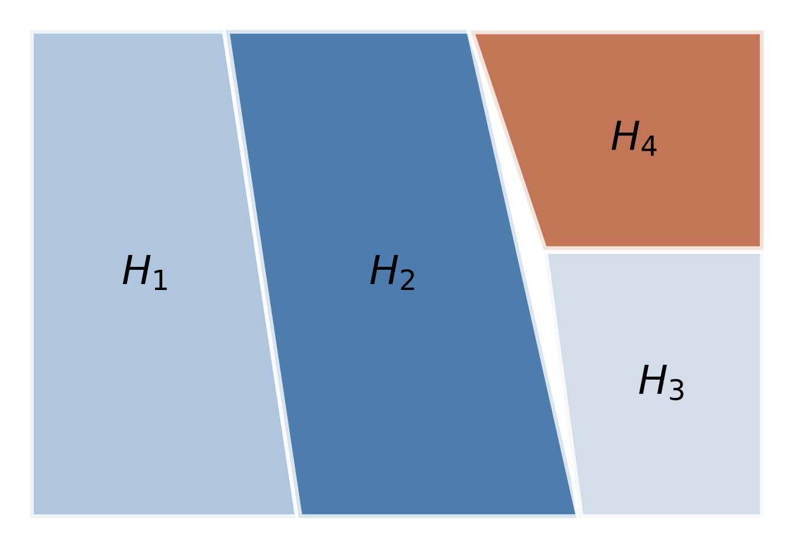
De Morgan’s laws Thm 1.1
\[(A\cup B)^c = A^c\cap B^c,\qquad (A\cap B)^c = A^c\cup B^c\]
“Not (promo or app)” is “no promo and no app.”
An outcome is outside \(A\cup B\) exactly when it is outside \(A\) and outside \(B\). The second law swaps “and” with “or”.
Proof: see the book, Section 1.2.
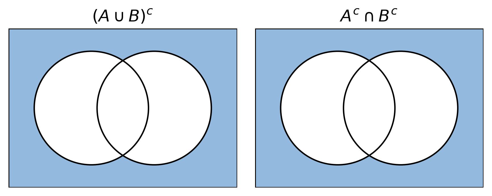
Your turn
Which region is \(A^c\cup B^c\)?
Shade it in your head, then say it in words.
Everything except the overlap.
By De Morgan, \(A^c\cup B^c=(A\cap B)^c\): “not both”.
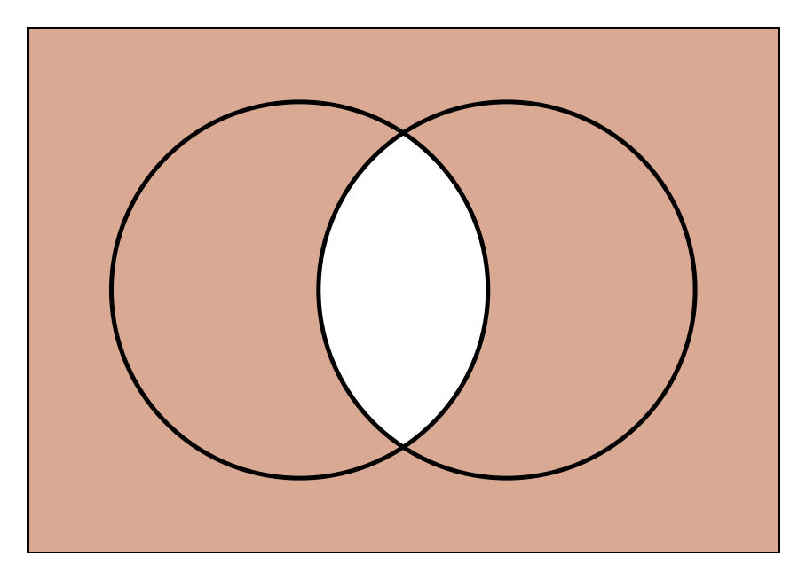
Where the axioms come from Def 1.4
Think of the share of days on which an event happens, over a very long run. It is never negative, it equals 1 for the sure event, and for events that cannot happen together the shares add up.
A probability assigns to every event \(A\) a number \(\Prob(A)\) so that
- \(\Prob(A)\ge 0\);
- \(\Prob(\Omega)=1\);
- if \(A_1, A_2,\dots\) are pairwise mutually exclusive, then \(\Prob(A_1\cup A_2\cup\dots)=\Prob(A_1)+\Prob(A_2)+\dots\)
Kolmogorov turned these three observations into the definition. Everything else follows from these three lines.
Consequences of the axioms Thm 1.2
For any events \(A\) and \(B\):
- \(\Prob(\varnothing)=0\)
- \(\Prob(A^c)=1-\Prob(A)\)
- \(A\subseteq B\ \Rightarrow\ \Prob(A)\le\Prob(B)\). In particular \(\Prob(A)\le 1\).
- \(\Prob(A\cup B)=\Prob(A)+\Prob(B)-\Prob(A\cap B)\)
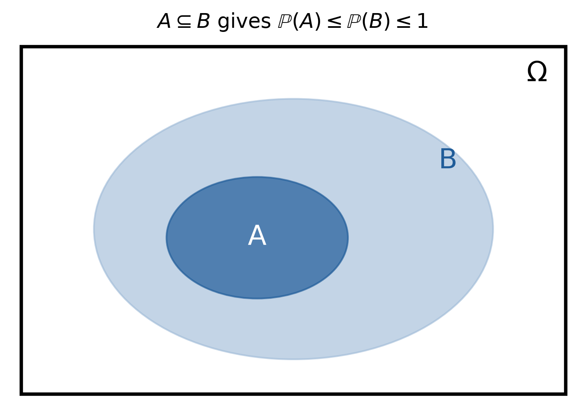
Why the consequences hold Thm 1.2
- \(A\) and \(A^c\) are mutually exclusive and \(A\cup A^c=\Omega\), so axioms 3 and 2 give \[\Prob(A)+\Prob(A^c)=\Prob(\Omega)=1.\]
- If \(A\subseteq B\), then \(B\) is the union of the disjoint events \(A\) and \(B\cap A^c\): \[\Prob(B)=\Prob(A)+\Prob(B\cap A^c)\ge\Prob(A).\]
- Split \(A\cup B\) into \(A\) and \(B\cap A^c\), and \(B\) into \(B\cap A\) and \(B\cap A^c\). Substitute.
(1) takes \(A_1=\Omega\) and all other \(A_i=\varnothing\) in axiom 3. Full proof: book, Section 1.3.
Inclusion-exclusion for two events Thm 1.2(4)
\[\begin{aligned}\Prob(A\cup B)={}&\Prob(A)+\Prob(B)\\&-\Prob(A\cap B)\end{aligned}\]
Property (4) is the formula you will use most often.
Add \(\Prob(A)\) and \(\Prob(B)\), and the outcomes in both events are counted twice. Subtract the overlap once.
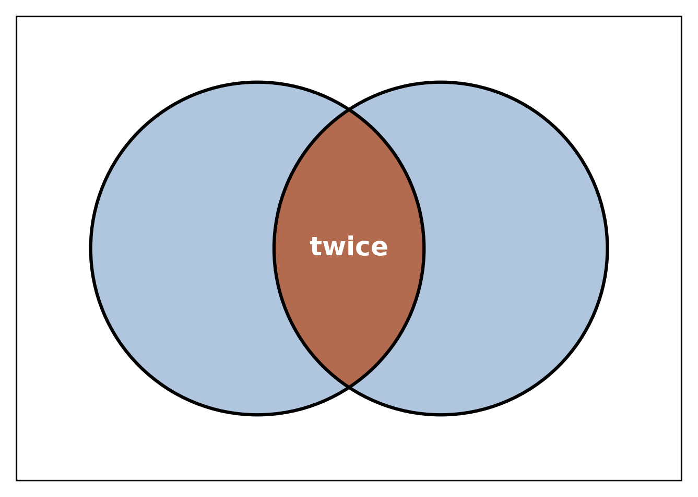
Three events Eq 1.1
For three events the correction goes one step further:
\[ \begin{aligned} \Prob(A\cup B\cup C)={}&\Prob(A)+\Prob(B)+\Prob(C)\\ &-\Prob(A\cap B)-\Prob(A\cap C)-\Prob(B\cap C)\\ &+\Prob(A\cap B\cap C). \end{aligned} \]
Singles plus, pairs minus, the triple plus.
The centre is added three times, subtracted three times, and added once: counted exactly once.
Promo code and app, with numbers Ex 1.3
A hypothetical online store: 40% of orders use a promo code (\(A\)), 55% come through the app (\(B\)), 20% do both.
Find the probability that a random order
- uses a promo code or the app;
- uses neither;
- comes through the app without a promo code.
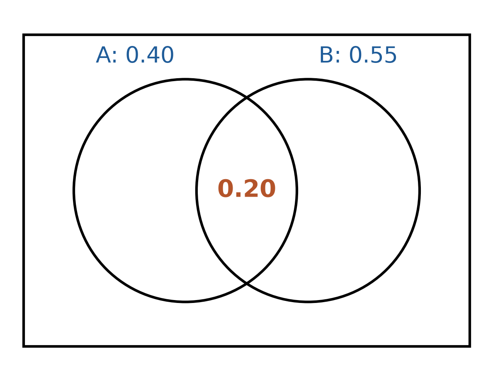
Promo code and app, solution Ex 1.3
(a) By Thm 1.2(4): \(\Prob(A\cup B)=0.40+0.55-0.20=\) 0.75
(b) The complement of (a): \(\Prob\big((A\cup B)^c\big)=1-0.75=\) 0.25
(c) \(\Prob(B\cap A^c)=\Prob(B)-\Prob(A\cap B)=0.55-0.20=\) 0.35
Check. Four disjoint pieces: promo only, app only, both, neither.
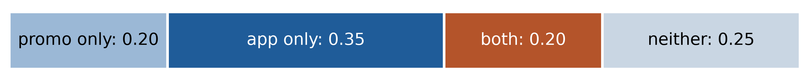
Pitfall: forgetting the overlap Thm 1.2(4)
Wrong. \[\Prob(A\cup B)=0.40+0.55=0.95\] The 20% who used both are counted twice.
Right. \[\begin{aligned}\Prob(A\cup B)&=0.40+0.55-0.20\\&=0.75\end{aligned}\]
Fill in 0.40 and 0.55 as the pieces of a picture, and the numbers add to more than 1. That is the warning sign.
“At least one” means “1 minus none” Thm 1.2(2)
The complement rule is the tool for any “at least one” question.
“Happens at least once” is usually hard to count. “Never happens” is often a single product.
Compute that, then subtract from 1.
We use it in the counting examples next and in every later lecture.
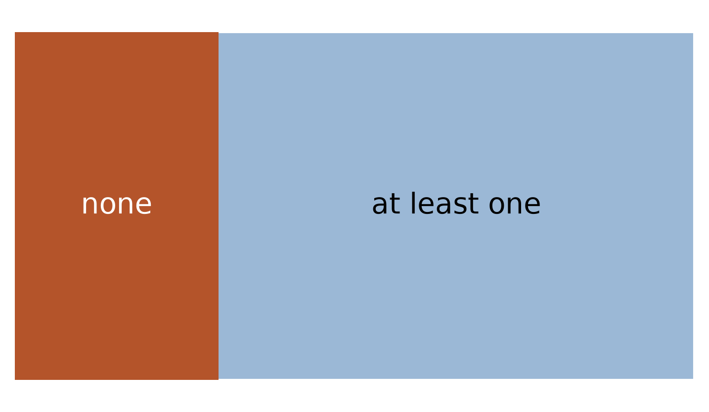
Classical probability Def 1.5
Suppose \(\Omega\) has finitely many outcomes, all equally likely by symmetry. Then \[\Prob(A)=\frac{|A|}{|\Omega|}=\frac{\text{outcomes in }A}{\text{outcomes in }\Omega}\]
It never goes negative, \(\Prob(\Omega)=1\), and for mutually exclusive events the counts add up. So it is a legitimate probability.
The whole difficulty hides in “equally likely”.
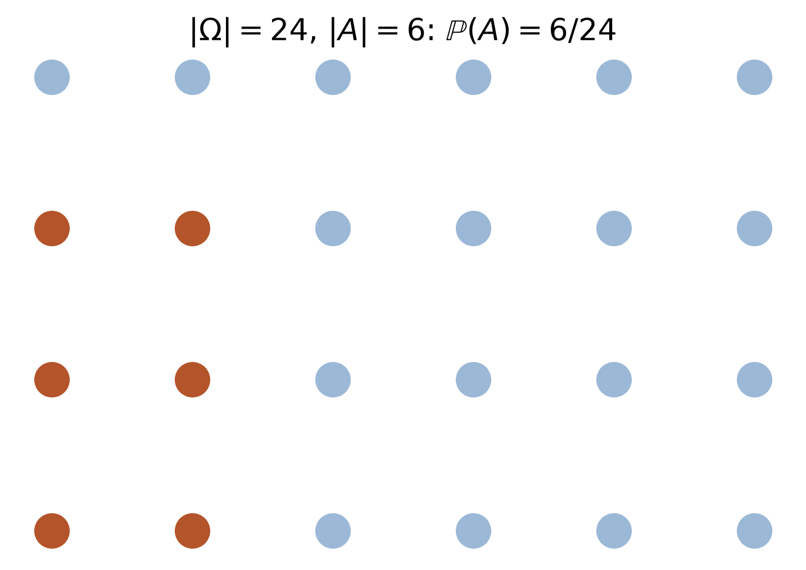
Two dice Ex 1.4, Fig 1.2
A red die and a blue die: 36 outcomes \((i,j)\), all equally likely.
What is the probability that the sum is 7?
Sum 7: \((1,6),(2,5),(3,4),(4,3),(5,2),(6,1)\).
Six outcomes out of 36: \[\Prob(\text{sum}=7)=\frac{6}{36}= \color{#b4542a}{\mathbf{1/6}}\]
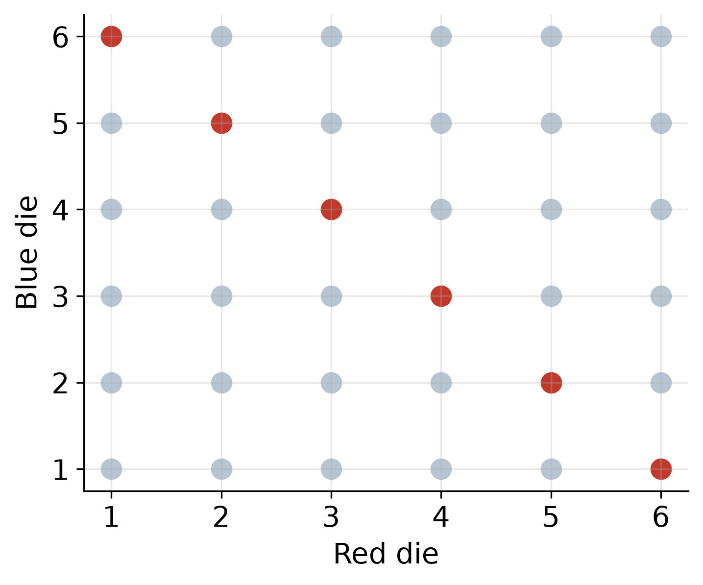
The eleven sums are not equally likely Sec 1.4
The possible sums are \(2,3,\dots,12\): eleven values. Many students say each has probability \(1/11\).
It does not. The sum 7 happens in six ways, the sum 2 in one: \((1,1)\).
Eleven sums is the coarse sample space. The 36 pairs are equally likely.
Before using Def 1.5, ask: what is the finest description in which every outcome is equally likely?
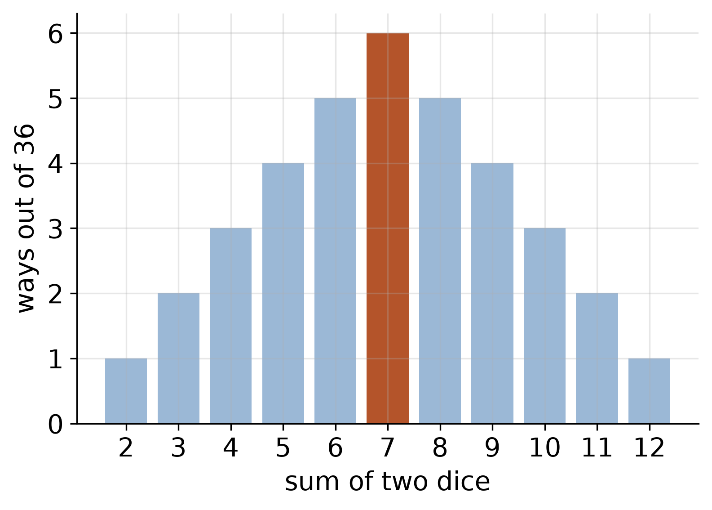
The same trap, in a suit Sec 1.4
Coin twice, exactly one head. Not \(1/3\) from the counts \(\{0,1,2\}\).
Outcomes \(HH, HT, TH, TT\). Exactly one head is \(\{HT, TH\}\): \(2/4=1/2\).
“A customer buys or does not, so the probability is 1/2.” The two outcomes are not equally likely.
Classical probability is right for dice, cards, lotteries and a random name from a list. It is wrong for most business questions. There the probability has to come from data or from a model, and that is what the rest of the course is about.
Your turn
Two dice are rolled. What is the probability that the sum is at least 10?
Sums 10, 11, 12 have 3, 2 and 1 outcomes.
\[\frac{3+2+1}{36}= \color{#b4542a}{\mathbf{1/6}}\]
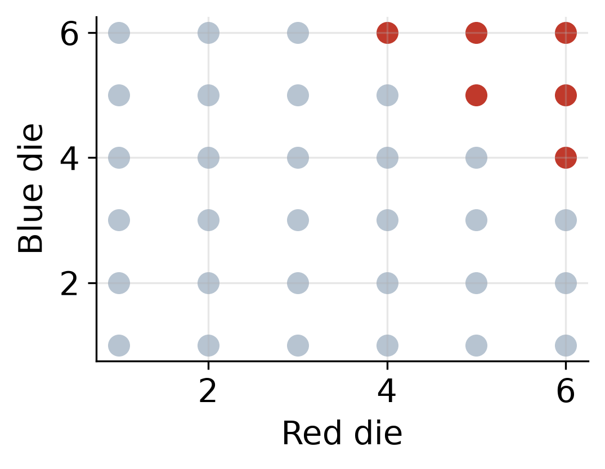
Break
Back in 10 minutes.
Product rule Thm 1.3
A procedure has \(k\) stages. Stage 1 can be done in \(n_1\) ways, stage 2 in \(n_2\) ways (whatever happened in stage 1), and so on. The whole procedure can be done in \[n_1 n_2\cdots n_k\ \text{ways.}\]
After stage 1 there are \(n_1\) situations, each continues in \(n_2\) ways: \(n_1n_2\) pairs. Then triples, and so on.
Proof: see the book, Section 1.5.
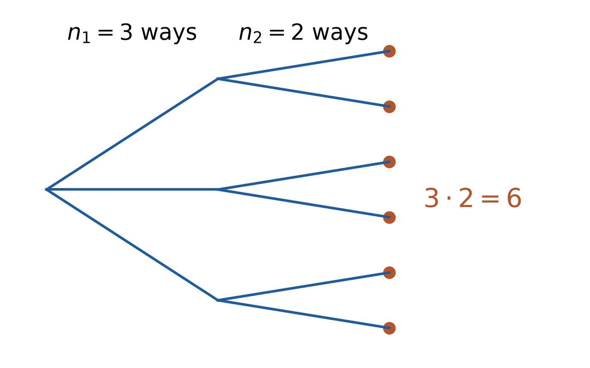
PIN codes Ex 1.5
A bank card has a four-digit PIN.
| Rule | Choices per position | Count | Kind of count |
|---|---|---|---|
| any digits | \(10\cdot10\cdot10\cdot10\) | \(10^4=10\,000\) | ordered, with repetition |
| all digits different | \(10\cdot9\cdot8\cdot7\) | \(5040\) | ordered, no repetition |
A thief who guesses one PIN at random hits it with probability \(1/10\,000\).
With repeats, each digit is chosen afresh and the product rule alone gives \(n^k\), here \(10^4\). Without repeats the choices shrink by one at each step. That case, and two related ones, have classical names.
Permutation Def 1.6
A permutation of \(n\) distinct objects is an ordering of all of them in a row. There are \(n!\) permutations, read “\(n\) factorial”: \[n!=n(n-1)\cdots2\cdot1,\qquad 0!=1.\]
Kemal drives a delivery van and has 5 shops to visit this morning. Each route is a permutation of the 5 shops: \[5!=5\cdot4\cdot3\cdot2\cdot1=\color{#b4542a}{\mathbf{120}}\ \text{routes.}\]
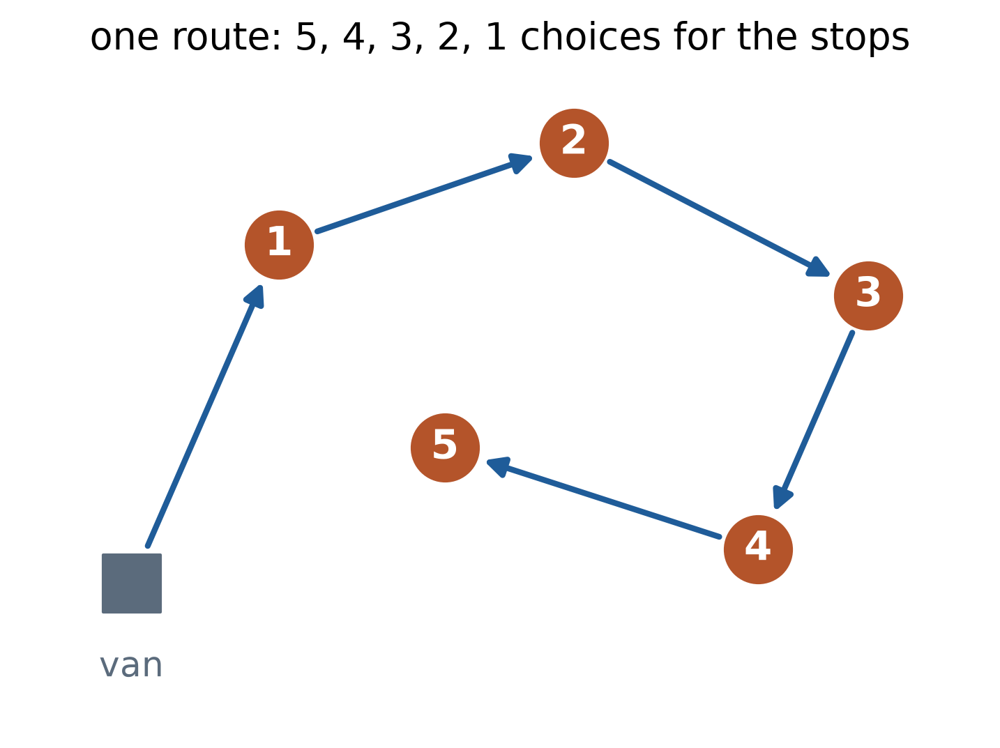
Arrangement Def 1.7
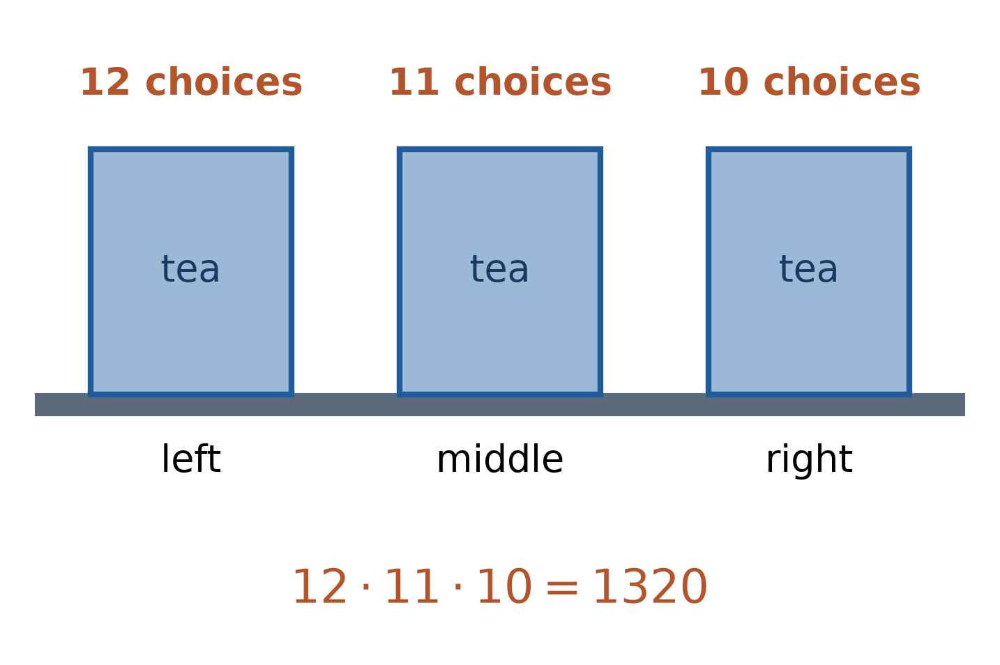
An arrangement of \(k\) objects from \(n\) distinct objects (\(k\le n\)) is an ordered selection without repetition. The number of arrangements is \[\frac{n!}{(n-k)!}=n(n-1)\cdots(n-k+1).\]
A supermarket puts 3 of its 12 tea brands into the eye-level slots: 1320 arrangements. The PINs with four different digits are arrangements of 4 from 10: \(10!/6!=5040\).
With \(k=n\) we get a permutation, and the formula gives \(n!/0!=n!\). That is one reason to set \(0!=1\).
Combination Def 1.8
A combination of \(k\) objects from \(n\) distinct objects (\(0\le k\le n\)) is an unordered selection without repetition, that is, a subset of size \(k\). Their number is written \(\binom{n}{k}\). We read it “\(n\) choose \(k\)” and call it the binomial coefficient.
The same supermarket picks 3 of its 12 tea brands for a weekend discount. Now the three brands form a set, and nothing is first or last: \(\binom{12}{3}=220\) ways.
The lottery and the inspector’s sample, coming up, are combinations too.
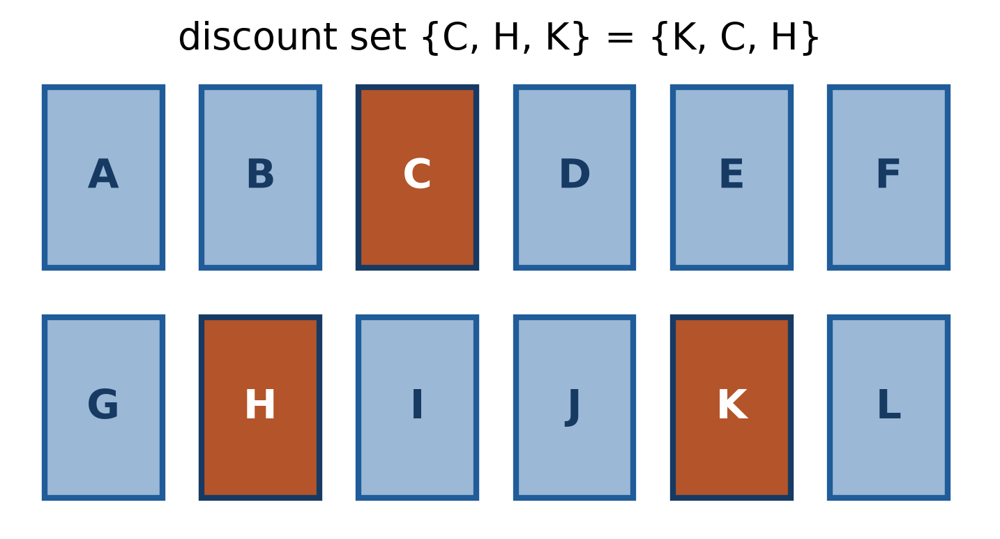
Other names and symbols
Other textbooks use other words and symbols for the same things, and you should recognise them.
| In this course | Also called | Symbols in other books |
|---|---|---|
| arrangement of \(k\) from \(n\) | \(k\)-permutation, partial permutation, variation | \(A_n^k\), \(P(n,k)\), \({}_nP_k\) |
| combination, \(\binom{n}{k}\) | subset of size \(k\) | \(C_n^k\), \({}_nC_k\) |
Be careful with the word “arrangement” in English books. Many of them use it loosely for any ordering, a full permutation included. In this course it always means an ordered selection of \(k\) from \(n\).
Orderings and selections Thm 1.4
From \(n\) distinct objects:
| permutation | arrangement | combination | |
|---|---|---|---|
| order matters? | yes | yes | no |
| how many used? | all \(n\) | \(k\) | \(k\) |
| number | \(n!\) | \(\dfrac{n!}{(n-k)!}\) | \(\dbinom{n}{k}=\dfrac{n!}{k!\,(n-k)!}\) |
Each combination appears \(k!\) times among the arrangements, once for each order: \[\frac{n!}{(n-k)!}=k!\binom{n}{k},\qquad\text{tea: } 1320=3!\cdot220.\]
Two facts about \(\binom{n}{k}\) Thm 1.4
\[\binom{n}{k}=\binom{n}{n-k}\] Choosing who goes in is the same as choosing who stays out.
\[\binom{n}{0}=\binom{n}{n}=1\] One way to take nobody, one way to take everybody.
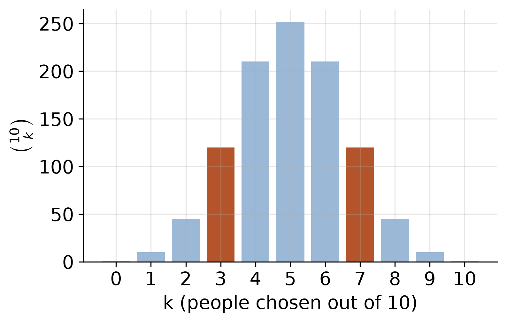
Does order matter? Thm 1.4
Swap two chosen items. If the result is a different outcome, count arrangements. If it is the same outcome, count combinations.
| Choose 3 of 10 candidates for… | Order | Count |
|---|---|---|
| gold, silver, bronze | matters: arrangements | \(10\cdot9\cdot8=720\) |
| a project team | does not matter: combinations | \(\binom{10}{3}=120\) |
Check: \(720/3!=120\). Every team of 3 can be arranged in \(3!=6\) medal orders.
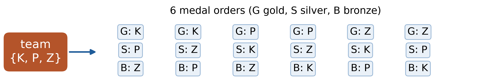
A 6-from-45 lottery Ex 1.6
You pick 6 different numbers from 1 to 45. Order is irrelevant, so a ticket is a combination of 6 from 45.
\[\binom{45}{6}=\frac{45\cdot44\cdot43\cdot42\cdot41\cdot40}{720}=8\,145\,060\]
A single ticket wins the jackpot with probability \[\frac{1}{8\,145\,060}\approx 1.2\cdot10^{-7}.\]
Buy a ticket every week and you would wait on average about 157 000 years.
Expired packs: the set-up Ex 1.7
A warehouse shelf holds 20 packs of yoghurt, 3 of them past their date. An inspector takes 4 packs at random. Find the probability that
- exactly one is expired;
- none is expired;
- at least one is expired.
Order does not matter: a sample is a combination of 4 from 20, so \[|\Omega|=\binom{20}{4}=4845.\]
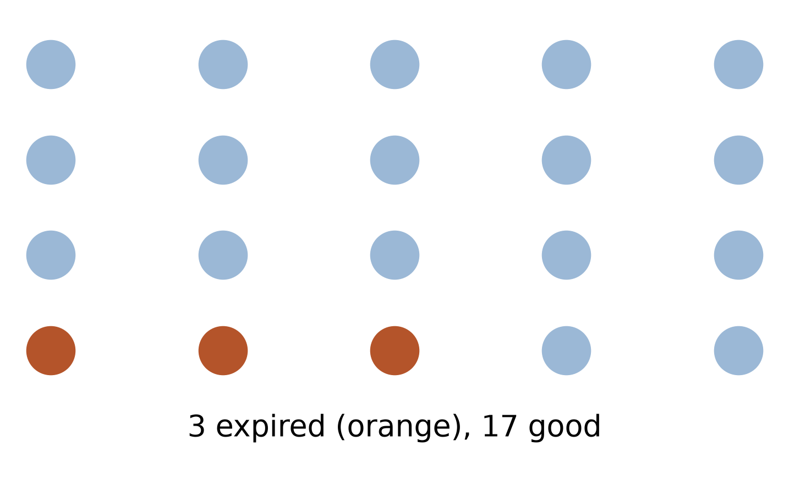
Expired packs: (a) and (b) Ex 1.7
(a) Exactly one expired. Choose 1 of the 3 expired and 3 of the 17 good, then multiply (product rule): \[\binom{3}{1}\binom{17}{3}=3\cdot680=2040,\qquad \Prob=\frac{2040}{4845}\approx \color{#b4542a}{\mathbf{0.421}}\]
(b) None expired. All 4 come from the 17 good packs: \[\frac{\binom{17}{4}}{\binom{20}{4}}=\frac{2380}{4845}\approx \color{#b4542a}{\mathbf{0.491}}\]
The numerator in (a) is a product: pick from the bad group, and pick from the good group. Why not \(3+17\)?
Expired packs: (c) and what it means Ex 1.7
(c) At least one expired. Use the complement: \[1-0.491= \color{#b4542a}{\mathbf{0.509}}\]
The inspector checks four packs out of twenty and finds a problem in barely more than half of the cases, although 15% of the packs are bad.
Sampling a small part of a batch is a weak control. We return to sample sizes in module 3.
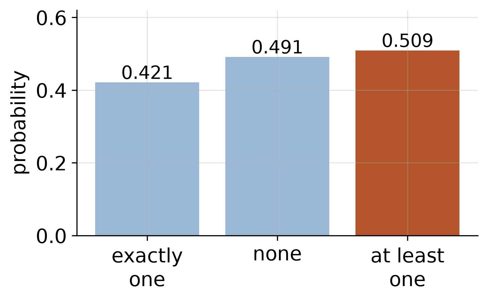
Your turn
A password has 4 characters, each a lowercase letter (26 choices).
How many passwords have at least one repeated letter? Use the complement.
All four different: \(26\cdot25\cdot24\cdot23=358\,800\). All passwords: \(26^4=456\,976\).
\[456\,976-358\,800= \color{#b4542a}{\mathbf{98\,176}}\]
Geometric probability Def 1.9
Sometimes outcomes cannot be listed: a moment in time, a point on a map. “At random” then means every place is equally good.
\(\Omega\) is a segment, a plane region or a region in space with finite size. An outcome is chosen uniformly at random if \[\Prob(A)=\frac{\text{size of }A}{\text{size of }\Omega}\] where size is length, area or volume.
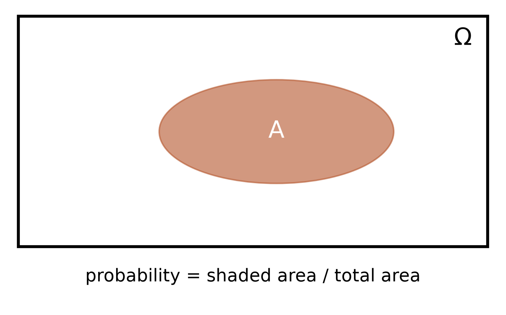
A courier in a two-hour window Ex 1.8
The courier arrives at a uniform moment between 10:00 and 12:00. You are out from 10:30 to 11:15. What is the probability that she comes while you are out?
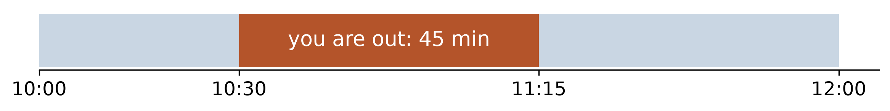
\(\dfrac{45}{120}=\) 3/8
Two people, one café: the set-up Ex 1.9
Zarina and Oksana meet at a café between 12:00 and 13:00. Each arrives at a random moment of that hour, independently, and waits 15 minutes before leaving. What is the probability that they meet?
Let \(x\), \(y\) be the arrival times in minutes. The pair \((x,y)\) is a uniform point in the square \([0,60]^2\), area 3600.
They meet when \(|x-y|\le 15\): the band around the diagonal.
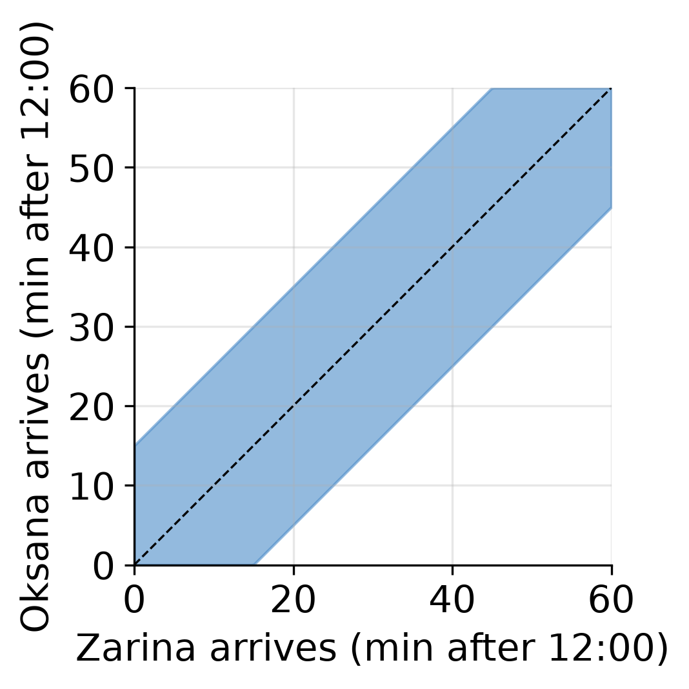
Two people, one café: the area Ex 1.9
Easier to find the area outside the band: two right triangles with legs \(60-15=45\), each of area \(45^2/2\).
The band has area \(3600-45^2=1575\), so \[\Prob(\text{meet})=\frac{3600-45^2}{3600}=1-\Big(\frac{45}{60}\Big)^2= \color{#b4542a}{\mathbf{7/16 \approx 0.44}}\]
People find this low. Fifteen minutes feels generous, and yet they miss each other more than half of the time.
Draw the problem as a square: two numbers become one point. That is the entire trick.
Probability zero is not impossible
In a geometric setting a single point has no length, so its probability is zero.
The courier arrives at exactly 10:47:12.000 with probability 0. Still, she arrives at some moment.
Once \(\Omega\) is a continuum, probability zero does not mean impossible.
This matters in Lecture 4.
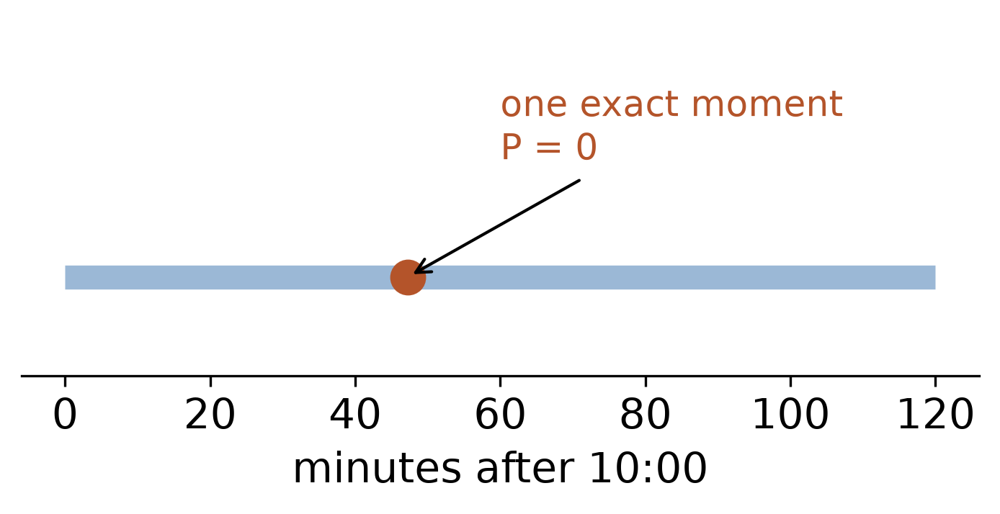
Your turn
A point is chosen uniformly in a square of side 2. What is the probability that it lies within distance 1 of the centre?
Favourable region: a circle of radius 1, area \(\pi\). The square has area 4.
\[\frac{\pi}{4}\approx \color{#b4542a}{\mathbf{0.785}}\]
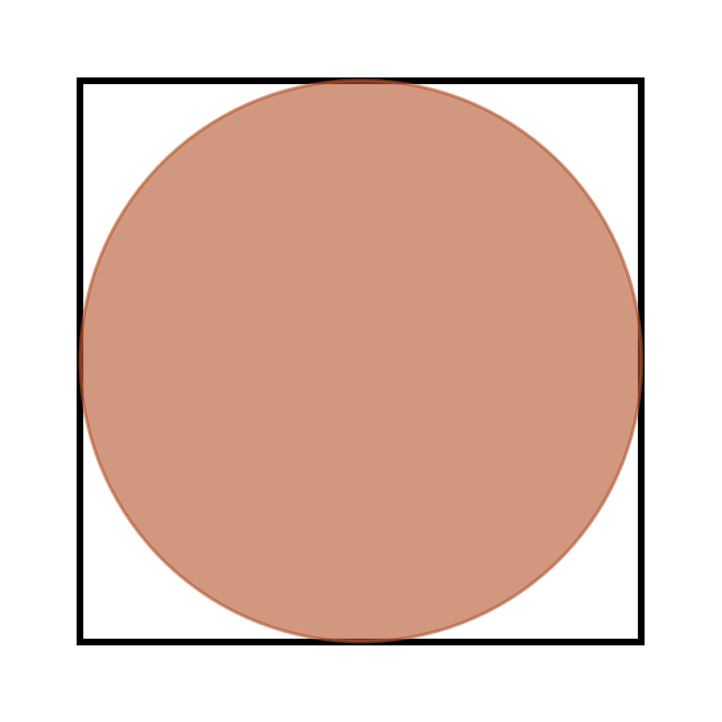
Your turn
A manager says: “The chance of a delay at the supplier is 0.5, the chance of a customs problem is 0.6, and they never happen together.”
What is wrong with that statement?
Mutually exclusive events would give \[\Prob(A\cup B)=0.5+0.6=1.1>1.\]
A probability cannot exceed 1. The three claims cannot all be true.

Probability Theory and Mathematical Statistics · HSE 2026/27